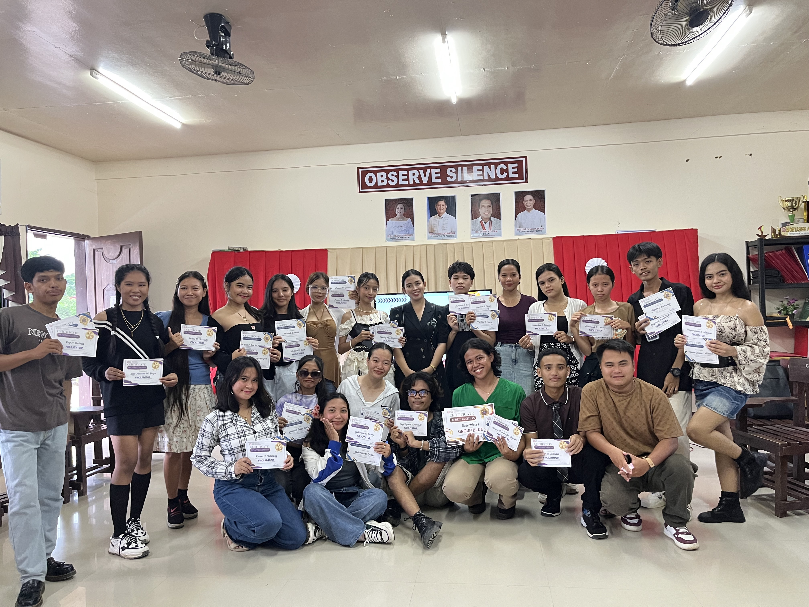
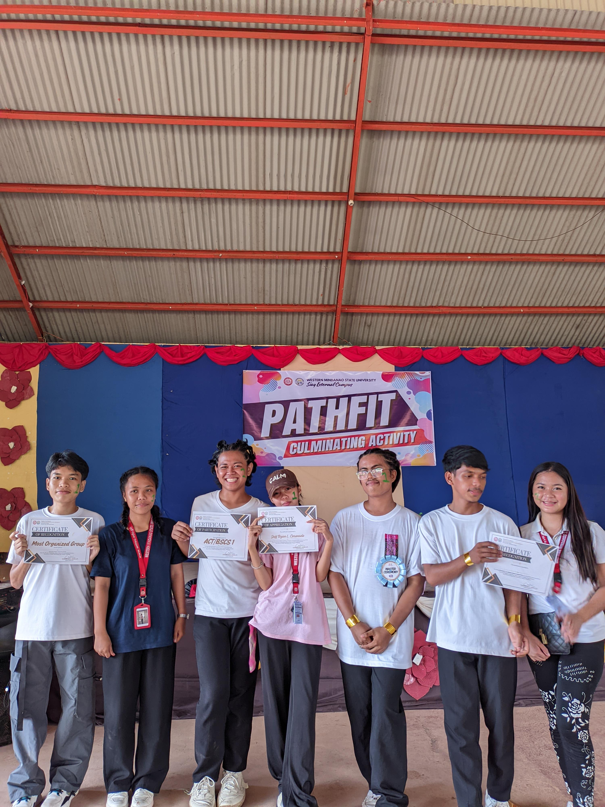

NSTP GRADUATE

NSTP Certificates

First Place on PathFit Dance Contest
Hi, my name is Jeff Ryan L. Coronado, and I am a 1st year student at Western Mindanao State University, studying Bachelor of Science in Computer Science. I have a strong interest in website development and enjoy learning about websites. I am always eager to grow, collaborate, and take on new challenges.
NSTP GRADUATE
NSTP Certificates
First Place on PathFit Dance Contest